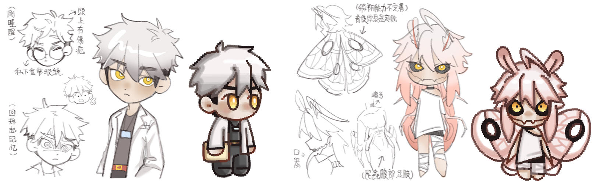

從以前開始就很喜歡獵奇的風格，偶爾也會看一些關於人體實驗或奇異現象題材的影片解說。
所以以此題材為概念發想，並參考日本731人體實驗(真實事件)與電影人形蜈蚣(虛擬電影)等資料。
並以1900年代為時空背景，發想關於一個家庭和人體實驗間的劇情故事，
探究期間的秘密，並譴責現實中對於人體實驗的不道德與其正當性質。
類型 : 2D平面
風格 : 像素、插圖
遊戲類型 : 解謎型、劇情向RPG
平台 : PC端遊玩
單人遊玩、劇情小品、黑暗風改造元素
背景設定於西元1930~1950年代的美國。
主角Emir小時後和家人出遊卻發生了一場意外，父母雙亡，妹妹失蹤。Emir僥倖存活被救走，
並送到了孤兒院，但意外卻使Emir的腦部受到了損傷，忘記了事故發生前的記憶。
長大後的Emir成為了生物研究員，被上級指派去往秘密的非法實驗室，Emir被指派研究"NO.0012"
的改造人實驗體。在研究NO.0012的過程中，Emir逐漸找回了丟失的記憶，
還找到了關於NO.0012的真實身分與實驗室的秘密，於是Emir決定計畫一場逃脫行動....
A、D : 操控角色左右移動
E : 與角色、場景進行互動
滑鼠 : 解謎互動、問答選項選擇、介面選項選擇
空白鍵 : 對話劇情快轉、門鎖QTE 交互
像素風格 : 遊戲畫面(操控角色時) 插畫風格 : 劇情對話、CG插圖出現時
(有縮減，非完整版，由主角Emir的第一人稱視角進行)
(開頭*第一幕*)
(畫面亮起,地點在主角房間，主角剛從夢中驚醒)
「......!」「又是那個夢....。」
「我已經做過這個夢無數次了，但到關鍵時刻總是會驚醒過來，我永遠不知道結尾」「我只記得，夢裡很黑、很暗，周圍是霧濛濛的一片，但能聽到車子的引擎聲，隨後我突然聽見一個喇叭的聲音和煞車聲，然後我就醒過來了….」
(Emir揉了揉額角，喃喃自語著。)
「唉——沒時間細想這些。昨日我被上頭調派來到了這鳥不生蛋的實驗基地，雖然建築規模較小，但警備還挺森嚴的，天知道是想藏住什麼…」
「不說了，該起身準備工作了。希望這新工作不會太糟...。」
(Emir起床洗漱，穿上實驗袍後便走出了房間，推開門來到了實驗室)
「讓我看看工作內容，觀察並研究實驗體No.0012…這是什麼意思….？」「......!!!」
(Emir來到No.0012的實驗病房前，抬眼看到的是No.0012那似人非人，有著昆蟲特徵的面貌與身軀。)
「天啊......這真的是人類嗎...?他們居然把人改造成這幅模樣...到底是想做什麼...?」
「冷靜點...我只是聽從命令而已，無論發生什麼事，都與我無關，不然我可就飯碗不保了。」
(Emir努力平復住心情，接近No.0012並開始進行觀察研究)

(主角) Emir 22歲 男性
小時候發生一場車禍導致父母雙亡、妹妹失蹤，自己則被送進孤兒院，
長大後成為生物研究員。因車禍而腦部記憶受損，並非完全不見只是需要刺激。
時常作惡夢(關於車禍)。性格安分守己，置身事外，不會想去牽扯其他事，
除非是對於自身來說很重要的事。
NO. 0012 ( 本名 Amy )
實際上為主角失蹤的妹妹，在車禍中被有心人士綁架走並帶回秘密基地進行改造。
對於車禍發生前的家庭記憶還留存著但很模糊，後期通過主角來清晰記憶。
表面上是小女孩，但因改造而有了昆蟲的特徵與特性，改造後身體虛弱、無法講話。
一個結局遊玩時間約1.5 - 2 小時，遊戲中無存檔點可讀取
二周目會增加 0012 的生世背景資料讓主角發現而觸發接續的劇情
增加逃脫計畫，玩家須透過解謎和互動，逃出大門外。設有時間限制，影響結局走向
遊玩二周目時如果沒有發現關鍵道具，不會觸發後續劇情
* 1周目固定結局
普通結局 "沒有作為" (主角在最後都沒有什麼行動真相與秘密繼續埋藏無人知曉)
「……事情已經結束了嗎？」
「不，其實什麼都沒結束。那些實驗還在繼續，那些生命……不，那些東西，還在冰冷的實驗室裡掙扎著。」
（他低頭看著自己的手，指尖輕微顫抖。）
「而我呢？我做了什麼？什麼都沒做……甚至連聲音都不敢出。」
「我告訴自己，這些事不關我的事……我只是個研究員，這麼大的秘密，我能怎麼辦？」
（他苦笑，語氣中帶著一絲自嘲。）
「揭露真相？我拿什麼去揭露？證據？勇氣？還是對抗整個系統的力量？……說到底，我就是怕。怕出事，怕被抓，怕像那些實驗體一樣成為犧牲品。」
「所以我選擇了什麼？選擇逃避，選擇沉默，選擇繼續‘生活’下去……像什麼都沒發生過一樣。」
「可是這種生活……真的是生活嗎？」
「我知道，我的沉默讓那些事情變得更加理所當然。也許……這就是我該受的懲罰吧，活著，卻像行屍走肉一樣。」
「不過……至少，我還是活著。」
「就這樣吧。那些事情……就當它從來沒發生過。」
* 2周目分支線結局
好結局 ''相依為命" (主角與0012一起成功逃脫，基地的真相之後也被爆出來)
（場景：破舊的小屋內，主角和妹妹坐在一張簡陋的沙發上，窗外傳來微風拂過的聲音。收音機裡正播放著新聞報導。）
「……根據最新消息，秘密研究基地的非法實驗被曝光，有關部門正在進行調查，但詳細內容目前尚未公開……」
（主角停下手中的動作，愣愣地盯著收音機，眉頭微蹙，像是陷入了短暫的回憶。）
「曝光了啊……」
「不知道這樣，會不會有人真的為那些被改造的生命伸張正義。」
（他苦笑一聲，低下頭看向身旁的妹妹。她的外表雖然異於常人，但那雙眼睛裡仍帶著熟悉的溫柔。）
「可惜，這些都已經不重要了，對吧？」
（主角伸出手，輕輕撫摸著妹妹的頭，語氣柔和且堅定。）
「不管你變成什麼樣子……」
「你依然是我的妹妹，我的家人。」
（妹妹微微一怔，抬起異化的手輕輕握住主角的手，雖然說不出話，但眼神中充滿依賴和感激。）
（主角露出一抹安心的笑容，將妹妹的頭輕輕靠在自己肩上，望向窗外。）
「我們……總算又在一起了。」
* 2周目分支線結局
壞結局 "犧牲品" (主角和0012逃脫失敗，主角納入被改造的行列，真相被埋藏)
「……就差一步……我們就能出去……」
「那扇門……就在眼前，可惡。只要再多幾秒，再多幾步……我們真的可以逃出去……」
（主角喘息著，眼神呆滯，語氣中滿是絕望。）
「我想過很多種結局……唯獨沒想到會是這樣。」
（他勉強抬起頭，望向實驗室冰冷的天花板，眼中流露出深深的自責與悔恨。）
「對不起，妹妹……我承諾過要帶你離開，我承諾過會保護你……可到頭來，我什麼都做不到。」
（主角輕輕閉上眼，深吸一口氣，語氣變得微弱卻透著不甘。）
「這些真相……這些骯髒的實驗……會被埋藏，沒人會知道，沒人會來救我們。」
「也許，有一天，這基地的秘密會被揭開，但那一天，對我們來說，可能早已不再重要。」
(遊戲畫面示意圖)
(道具說明)
布: 用來隱匿NO.0012，幫助逃脫的隱蔽度
剪刀: 用來剪斷基地的電線，分散其他人的注意，使逃脫行動更加順利
紙條: 記錄著通風管道連接大廳的路線，玩家需熟背指示方能逃出
螺絲起子: 轉開通風口周邊的螺絲
鑰匙: 打開大門口的鑰匙
" SWOT 分析"
S 優勢: 具有2D像素與2D插畫的風格，同時滿足雙方受眾群。
遊戲內劇情與遊玩方式多樣，滿足遊戲體驗感。
W劣勢: 市面上具有多種類似型的RPG解謎遊戲，題材不一定吸引到客群，
且遊玩時數偏長，不一定有時間遊玩完成。
O機會: 發展方向甚廣，可以以遊戲劇本去做影視或動畫類型的發展。
T威脅: 現今市場主要以3A、連線遊戲為大宗， 小品遊戲熬不出頭。
市場上生產遊戲的速度快，無固定玩家的遊戲容易被忽略。
" 目標市場與受眾"
目標市場: 解謎型小品、單機遊戲、獵奇實驗元素
目標受眾: 喜好劇情小品、解謎遊戲的玩家、遊戲實況主
AMANDA THE ADVENYURER
(參考遊戲中的幼兒式互動，例如拼寫單字或找出東西)
LITTLE NIGHTMARES
(參考遊戲中的躲避機制與遊玩方式)
ANGELS OF DEATH
(參考遊戲裡2D的操作方式與解謎部分和美術畫風)
DEAD PLATE
(參考遊戲中的天數機制和對話方式與多結局的設計)